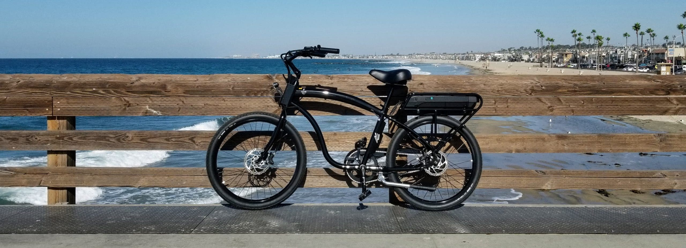

Fynking Analytics
Retail Investing. Reimagined.
Through the power of new AI advances, Fynking Analytics seeks to make cutting-edge stock market insights available to everybody. Learn more about them at fynking.com!
iCycle Energy
Making e-mobility practical.
iCycle sought to create a cruiser-style e-bike that would charge on the existing EV J1172 ports in just minutes. Promising 50+ miles of carbon neutral range in a sleek, lightweight chassis, iCycle was sure to be a game changer.
The Social Butterfly
In the current social landscape, lives can be ruined by posting insensitively. The Social Butterfly sought to use tracking and deferred posting times to let their users take one final look before they hit send, potentially saving their reputations.
Our other 2021 Teams
- Connect Future: Next-Generation mounting brackets
- TraxsFit: Always Connected AI running coach
- Ability Line: Disablility management platform and Emergency dialer
- Limn: Socially conscious Social Media platform.
- And many more!